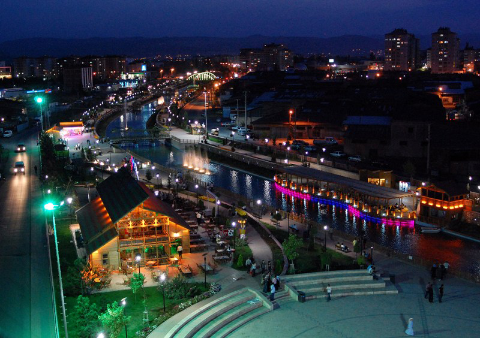
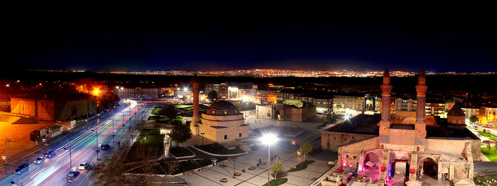
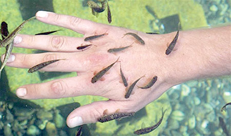
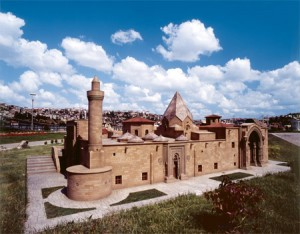

Sivas is the highest city of the Central Anatolian Region, and the most mountainous one with the numerous peaks.
Besides its historical treasures, the city possesses several other specialties, one of which is Balýklý Kaplýca, an interesting spa of the town Kangal.
It is a thermal spring, filled with tiny fish living in the hot waters, which provides a different type of cure for skin complaints.
It is the only cure center in the world for "Sedef Hastalýgý".
Soguk Cermik is another spa center. Hafik and Zara lakes are some of the interesting places for picnicking, boating and fishing.
Another special characteristic of this town,are the world famous Kangal dogs.
These sheep dogs have proven their loyalty and success even in the harshest climates such as in this city
Sivas is also known for its fine carpets of numerous designs and colors.
These locally produced weavings offer a wide variety of choice, and the inherent high quality is not subject to variation

AKSU SCENE FROM SIVAS

SIVAS CITY CENTER

THE DOCTOR FISHES

DIVRIGI MOSQUE